O que é o JDE Log Insights
Um log do JD Edwards EnterpriseOne pode ter milhões de linhas, e a resposta costuma estar em poucas delas. O JDE Log Insights lê esses arquivos e mostra por onde começar: agrupa os erros, mede funções de negócio (BSFN) e SQL, encontra pausas e desenha o que chamou o quê. [1]
É um único arquivo HTML, sem instalação nem conta.
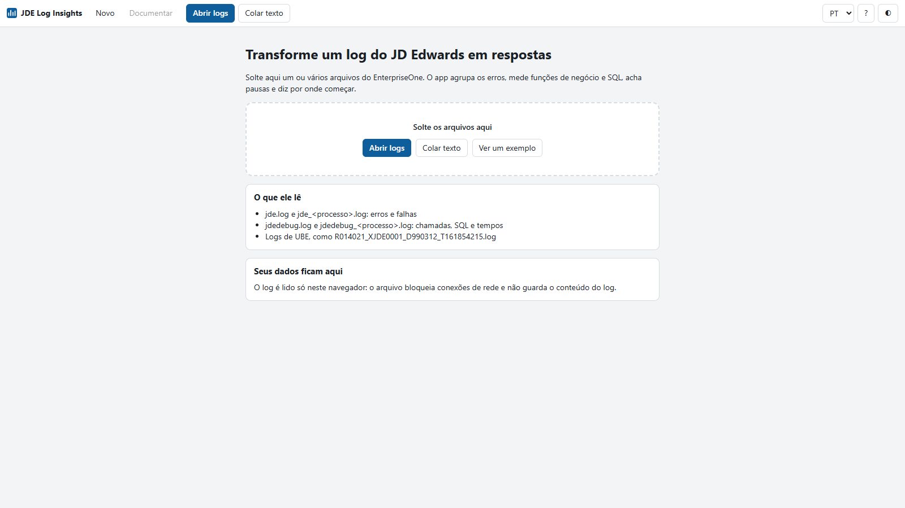
Como o app trata os seus dados
- Nada sai do seu computador. O arquivo bloqueia conexões de rede. Logs costumam trazer usuários, servidores e SQL, então isso importa.
- O log não fica guardado. Ao fechar a página, a análise some. O app só guarda idioma, tema e o limite de lentidão.
Os logs do JD Edwards
Cada arquivo responde a uma pergunta diferente. A documentação da Oracle separa assim: [2] [3] [4]
| Arquivo | Exemplo de nome | O que traz | Melhor para |
|---|---|---|---|
| jde.log | jde_442.log | Erros fatais e falhas | Saber o que deu errado |
| jdedebug.log | jdedebug_442.log | Chamadas de API, SQL e tempos. A Oracle avisa que ele não serve para acompanhar erros | Saber onde o tempo foi |
| Log de UBE | R014021_XJDE0001_D990312_T161854215.log | Seções, objetos, regras de evento e SQL de um relatório em lote | Acompanhar um UBE |
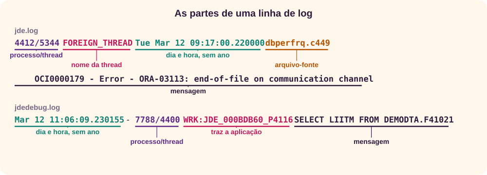
O número no nome é o ID do processo, então um servidor gera vários arquivos. Abra juntos os do mesmo processo: o app lê todos de uma vez e diz o que identificou em cada um.
Como obter os logs
O local do jde.log e do jdedebug.log vem de JobFile e DebugFile, na seção [DEBUG] do jde.ini. [3] O jdedebug só traz chamadas, SQL e tempos com a depuração ligada:
[DEBUG]
Output=FILE
LogErrors=1- Ligue a depuração na máquina certa. Para reproduzir o problema, isole um único kernel ou processo, para os logs não se misturarem. [7]
- Reproduza o problema uma vez e copie os arquivos. Eles podem ser sobrescritos na sessão seguinte: a Oracle descreve os dois comportamentos, sobrescrever e acrescentar, conforme o servidor e a estação. [3] [4]
- Volte
Outputao valor anterior. O log cresce rápido e pesa no processo: um autor estima de 2% a 5% a mais de tempo. [7]
Logs de UBE ficam na fila de impressão (PrintQueue), e o nível de detalhe vem de UBEDebugLevel, na seção [UBE]. [3]
Roteiro: investigando o exemplo
Use os dados de exemplo: são fictícios, montados a partir de trechos públicos de log, e o resultado abaixo é o que você verá. O caso tem de tudo: uma conexão perdida com o banco, uma leitura enorme e um SQL lento.
1. Abra o exemplo e leia o primeiro insight
- Abra o app e clique em Ver um exemplo.
- Confira os totais do topo: 8.693 linhas, 62 ocorrências de erro em 7 tipos, 124 chamadas de BSFN e 123 comandos SQL.
- Leia o primeiro cartão, marcado como Crítico: O banco de dados ficou fora de alcance. O ORA-03113 apareceu 22 vezes, de 12 de mar. 09:17:00 a 12 de mar. 09:17:42.
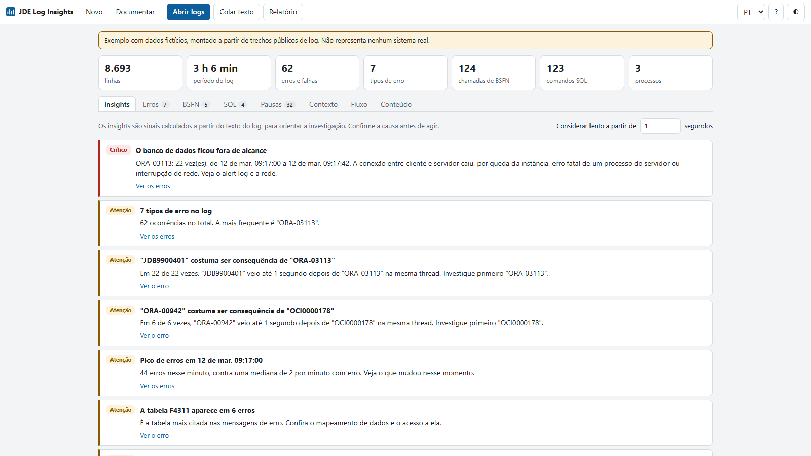
2. Abra o erro e veja a linha original
- No primeiro cartão, clique em Ver os erros. A aba Erros abre já filtrada.
- Clique na mensagem do ORA-03113. O detalhe traz o que a fonte diz sobre o erro e o link para ela.
- Em Ocorrências de exemplo, clique em Ver no log para conferir o trecho original, com a linha marcada.
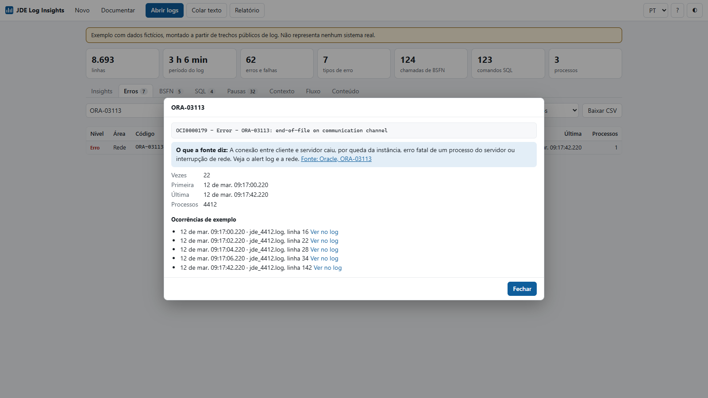
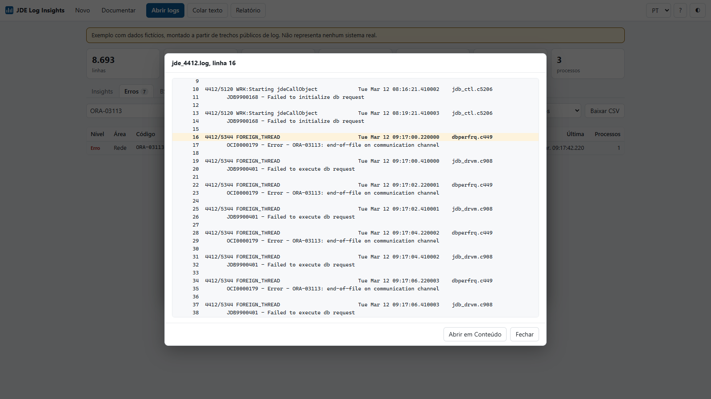
De volta aos insights, outro cartão diz que o JDB9900401 costuma ser consequência do ORA-03113. Foram 22 ocorrências, sempre até 1 segundo depois, na mesma thread. Por isso a investigação começa pelo ORA-03113.
3. Procure onde o tempo foi
- Abra a aba BSFN. A tabela vem ordenada por Tempo próprio.
- F4111EndDocument levou 9,13 s no total, e 7,41 s são tempo próprio dela. Logo, o tempo não está nas funções que ela chama.
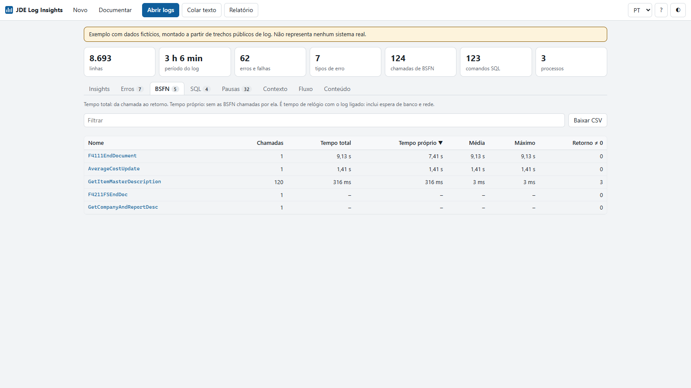
4. Descubra o SQL responsável
- Abra a aba SQL. O primeiro comando é uma leitura de F0005, sem WHERE, de cerca de 7,4 s.
- Veja os outros dois sinais: uma leitura de F41021 trouxe 4.000 linhas, e o comando em F4101 rodou 120 vezes.
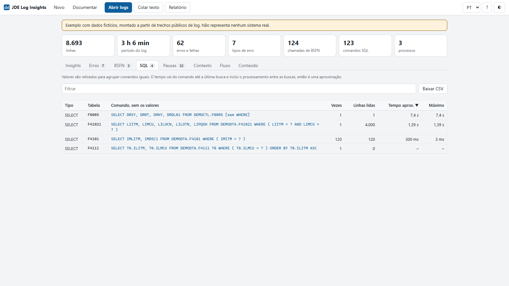
5. Veja o caminho no mapa
- Abra a aba Fluxo e clique no bloco F41021.
- O mapa destaca o caminho: P4116 chama F4111EndDocument, que chama AverageCostUpdate, que lê F41021. Agora você sabe qual tela leva a essa leitura.
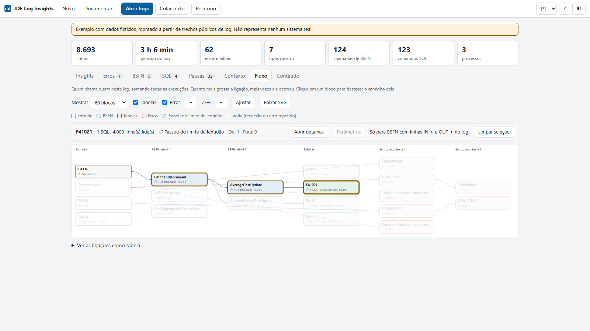
6. Gere o relatório
- Clique em Relatório e marque Ocultar usuários, servidores, IPs, caminhos e valores entre aspas.
- Revise o texto e use Copiar ou Baixar .md.
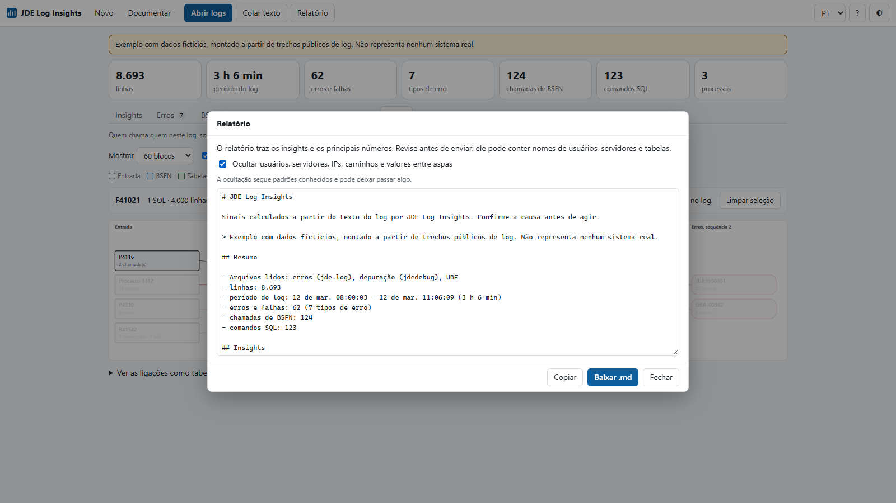
Resultado: em poucos minutos você tem uma hipótese para cada problema. Conexão com o banco perdida às 09:17, com um erro que é consequência de outro; uma leitura sem filtro; e uma função chamada 120 vezes. Falta confirmar cada uma com o DBA e com quem conhece o código.
↑ Voltar ao topoComo ler os insights
Os cartões são regras simples sobre os números do log, e estas são as condições exatas. Um sinal não é uma causa: ele diz onde olhar.
| Sinal | Quando aparece | O que fazer primeiro |
|---|---|---|
| Falha grave | Mensagem com ACCESS VIOLATION, SIGSEGV, core dump, out of memory ou fatal | Procure o .dmp.log: ele lista as threads no momento da queda. A Oracle indica começar pela que tem jdeLogCallStack. No IBM i, as pilhas ficam no jde.log. [3] |
| Banco fora de alcance | ORA-03113, 03114, 12154, 12170, 12514 ou 12541 | O detalhe do erro traz a orientação da Oracle para cada código, como alert log, rede ou listener. [8] |
| Erro dominante | Um erro responde por 30% ou mais das ocorrências, em ao menos 3 vezes | Comece por ele |
| Erro consequência | B veio até 1 s depois de A, na mesma thread, em ao menos metade das vezes e 3 ocorrências | Investigue A primeiro |
| Pico | Um minuto com 10 erros ou mais, e 5 vezes a mediana dos minutos com erro | Veja o que mudou naquele horário |
| Processo concentrado | Um processo com 70% dos erros, em ao menos 5 | Suspeite do que só ele faz |
| SQL repetido | Mesmo comando 50 vezes ou mais | Procure leitura dentro de laço |
| Leitura grande | Uma execução com 1.000 linhas ou mais | Confira o filtro e os índices |
| BSFN, SQL ou pausa lentos | Passam do limite ajustável, de 1 s por padrão | Abra a aba correspondente |
Abaixo dos cartões, dois gráficos mostram os erros e as linhas de log ao longo do tempo. Clique em uma barra de erro para ver só os erros daquele intervalo. Ver como tabela traz os mesmos números em tabela.
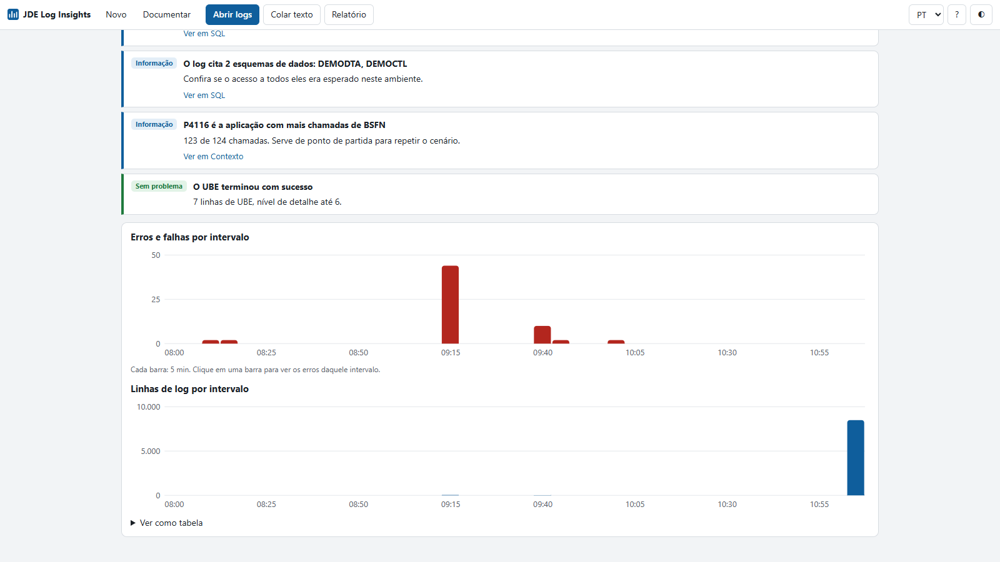
Erros
O app agrupa mensagens que só mudam nos valores, e o mesmo erro com números diferentes conta como um só. Filtre por Nível e Área, ou digite um trecho, como o nome de uma tabela.
- Fatal, Erro e Alerta vêm de códigos e palavras da mensagem, como
ORA-00942,OCI0000178efailed. - O que a fonte diz: o app tem uma pequena base, só com textos da Oracle, cada um com o link da fonte. [3] [4] [8]
- Código fora da base: procure no My Oracle Support ou no aplicativo P92002, que traz as mensagens de erro do sistema. [4]
BSFN
O app junta cada chamada ao seu retorno, por thread, e calcula dois tempos:
- Tempo total: da chamada ao retorno, incluindo as funções chamadas por ela.
- Tempo próprio: o total menos o tempo das funções filhas. É onde você deve olhar primeiro. [7]
- Retorno ≠ 0: chamadas que retornaram valor diferente de 0. O app só conta; confira como quem chama trata esse retorno.
SQL
O app retira os valores, para juntar comandos iguais, e soma execuções, linhas lidas e tempo. Assim, valores de clientes não ficam guardados na tabela.
- Linhas lidas: conta as linhas "Fetched the record" depois de cada comando. Um estudo de caso de P4116 mostra esse padrão: 40 mil linhas lidas em uma única chamada de função. [6]
- Tempo aprox.: vai do comando até a última busca, então inclui o que a aplicação fez entre as buscas.
- Pista: um intervalo longo entre o comando e a primeira busca costuma apontar para o banco, mais do que para a lógica. [7]
Pausas
Pausa é o tempo sem novas linhas no mesmo processo e na mesma thread. A Oracle sugere o jdedebug justamente para ver o ponto em que a execução normal parou. [3] Cada linha da tabela mostra o que veio antes e depois.
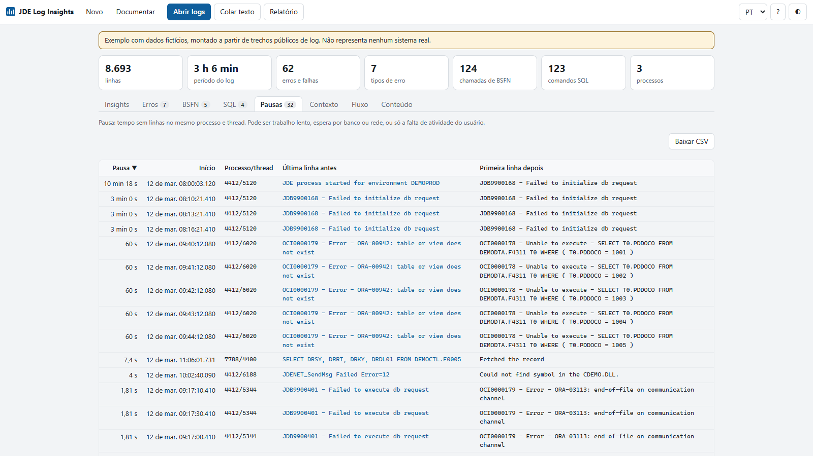
Contexto
A aba Contexto responde "o que estava rodando?": arquivos lidos e o tipo de cada um, aplicações e relatórios, tabelas, processos e threads, e as chamadas de API mais frequentes.
Fluxo
A aba Fluxo desenha quem chama quem, somando todas as execuções: entrada, BSFN por nível, tabelas e erros em sequência. Em um jde.log puro, mostra processo → erro → erro seguinte.
- Quanto mais grossa a ligação, mais vezes ela ocorreu.
- ⏱ marca o que passou do limite de lentidão, e a linha tracejada, uma volta, como recursão.
- Ao clicar em um bloco, o caminho dele fica em destaque e Abrir detalhes leva ao detalhe.
- Em uma BSFN, Parâmetros mostra lado a lado a entrada e a saída de cada parâmetro, das linhas IN-> e OUT->, em até cinco chamadas: a primeira, a mais lenta e as que retornaram valor diferente de 0. ≠ marca o que mudou.
- Ver as ligações como tabela traz as mesmas ligações em texto, e Baixar SVG salva a imagem.
Conteúdo
A aba Conteúdo mostra o log inteiro, linha a linha, com uma cor e uma etiqueta para cada tipo de evento: erros, retornos diferentes de 0, BSFN, SQL, leitura de linhas, parâmetros, API e UBE. Use-a quando os resumos já disseram onde olhar e você quer ler o que aconteceu ao redor.
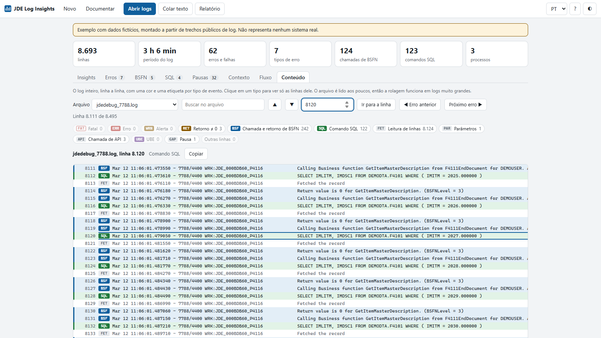
- Filtrar: clique em um tipo para ver só as linhas dele. Clicar em outro soma, e Mostrar tudo desfaz.
- Pausas: ⏸ marca a linha que veio depois de uma pausa acima do limite.
- Navegar: use a busca, Ir para a linha, Próximo erro ▶ e as setas. Em Ver no log, o botão Abrir em Conteúdo traz você para cá.
- Copiar: linhas com mais de 2.000 caracteres são cortadas na tela, e Copiar traz o texto inteiro.
Relatório e privacidade
Relatório gera um texto em Markdown com os insights e os principais números, para anexar a um chamado. Antes de enviar para alguém ou para uma IA, marque Ocultar usuários, servidores, IPs, caminhos e valores entre aspas.
Documentar, no menu do topo, junta numa página todas as abas, menos Conteúdo, sem os filtros da tela, e abre a janela de impressão do navegador. Escolha "Salvar como PDF" como destino para guardar a análise. Ao contrário do relatório, o PDF não oculta nada: os valores aparecem como estão no log.
Novo volta à tela inicial e tira a análise atual da memória, para você abrir outro log. Os arquivos no seu computador não mudam. Para guardar o resultado, use Documentar antes.
Um método para o log real
Com um problema real, esta ordem evita perder tempo:
- Comece pelo jde.log. Se houver falha grave ou queda de conexão, resolva isso antes de medir desempenho.
- Reproduza com depuração em um único processo, e abra o jdedebug.
- Siga o tempo: BSFN por tempo próprio, depois SQL e Pausas.
- Confirme na linha original com Ver no log e com quem conhece o código e o banco.
- Corrija e meça de novo. Um autor sugere 10 ou mais execuções e usar a mediana, porque uma só engana. [7]
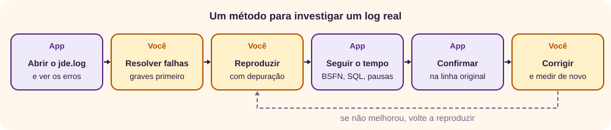
Para logs muito grandes ou análise oficial, a Oracle oferece o LogParse, no Performance Workbench do Server Manager, que gera resumo, CSV de BSFN e tabelas e pausas. [5] O JDE Log Insights é uma alternativa rápida, sem servidor, não um substituto.
↑ Voltar ao topoPrompts de IA
Com os sinais em mãos, ainda falta interpretar: o que esse código quer dizer, qual erro veio primeiro, o que perguntar ao DBA. Uma IA ajuda a organizar hipóteses e a preparar a conversa. Ela também erra com segurança: inventa causas, cita notas de suporte que não existem e supõe como é a sua customização. Trate a saída como rascunho de um colega apressado. Para escrever prompts melhores, veja o tutorial de prompts.
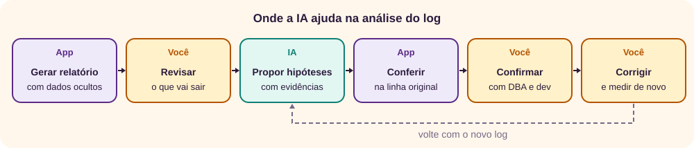
Antes de colar: logs podem trazer usuários, servidores, SQL e valores de clientes. O app não envia nada para a rede, mas o serviço de IA recebe tudo o que você colar nele. Use Ocultar usuários, servidores, IPs, caminhos e valores entre aspas, revise o texto e siga a política da sua organização para uso de IA.
Troque os trechos entre colchetes e cole na ferramenta de IA que você usa. Os prompts seguem a ordem da investigação, mas cada um funciona sozinho.
1. Priorizar o que o relatório mostra
Em Relatório, marque Ocultar usuários, servidores, IPs, caminhos e valores entre aspas, use Copiar e cole o texto no fim do prompt.
Você é um analista experiente em JD Edwards EnterpriseOne.
Abaixo está o relatório de uma ferramenta que lê logs do sistema.
Contexto do problema: [o que o usuário viu, quando, em qual aplicação]
Com base só no relatório:
1. Liste de 3 a 5 hipóteses, da mais provável à menos provável.
2. Para cada uma, cite o número ou a linha do relatório que a sustenta e diga o que a derrubaria.
3. Diga o que devo olhar primeiro e quem na equipe pode confirmar.
4. Separe o que é fato no relatório do que é suposição sua.
Não invente códigos, tabelas, notas de suporte nem características do meu ambiente. Se faltar dado, diga qual.
Relatório:
[cole o relatório]2. Explicar um erro
Abra o erro na aba Erros e use Ver no log para copiar a mensagem e as linhas ao redor, trocando dados sensíveis. Depois, compare a resposta com o que a Oracle diz sobre o código. [8]
Explique este erro de um log do JD Edwards EnterpriseOne para quem não é especialista.
Versão do sistema e banco: [ex.: Tools 9.2, Oracle, ou "não sei"]
O que estava sendo feito: [aplicação, UBE ou ação]
Mensagem e linhas ao redor:
[cole o trecho]
Responda:
1. O que a mensagem diz, em linguagem simples.
2. Causas possíveis, com o que confirma ou descarta cada uma.
3. Onde verificar e quem normalmente verifica.
4. Quais partes da sua resposta vêm de documentação e quais são dedução. Se não conhece o código, diga, em vez de adivinhar.3. Separar causa de consequência
Na aba Erros, use Baixar CSV e cole a tabela. Antes de colar, troque usuários, servidores e valores, porque o CSV não oculta dados. O prompt pede que a IA diga o que abrir no log para confirmar cada ligação.
A tabela abaixo lista os erros agrupados de um log do JD Edwards EnterpriseOne, com contagem, primeira e última ocorrência.
Identifique:
1. Quais erros parecem a origem e quais parecem consequência, usando a ordem no tempo e o tipo de mensagem.
2. Erros que ocorreram no mesmo período e podem ter a mesma causa.
3. Por qual erro começar, e por quê.
A tabela não mostra a thread nem o texto completo. Diga o que eu preciso abrir no log para confirmar cada ligação. Não trate coincidência no tempo como prova.
Tabela:
[cole o CSV]4. Entender onde a BSFN gasta tempo
Na aba BSFN, use Baixar CSV e cole a tabela. Em tempo de relógio, a diferença entre total e próprio indica onde descer. [7]
A tabela abaixo traz as funções de negócio (BSFN) medidas em um jdedebug do JD Edwards EnterpriseOne: chamadas, tempo total, tempo próprio, média, máximo e retornos diferentes de 0. Os tempos são de relógio, com o log ligado.
Cenário medido: [o que foi executado, e quantas vezes]
Tempo que o usuário percebeu: [ex.: 40 s]
1. Quais funções merecem atenção primeiro, e por quê.
2. Onde o tempo total é bem maior que o próprio, e o que isso indica.
3. Sinais de chamada repetida demais.
4. Que perguntas fazer a quem conhece o código.
Não diga o que uma função faz por dentro, a menos que eu informe. Se um nome sugerir algo, marque como suposição.
Tabela:
[cole o CSV]5. Analisar um SQL
Abra o comando na aba SQL e use Copiar: o texto vem sem os valores. Acrescente as colunas da linha, como execuções e linhas lidas. [7]
Analise este SQL de um log do JD Edwards EnterpriseOne. Os valores foram retirados.
Comando:
[cole o comando]
Execuções: [número]
Linhas lidas: [número]
Tempo aproximado (inclui o que a aplicação fez entre as buscas): [tempo]
Banco: [ex.: Oracle, SQL Server]
Tamanho da tabela: [linhas, ou "não sei"]
Responda:
1. O que chama a atenção: repetição, volume, falta de filtro.
2. O que pedir ao DBA para confirmar, como plano de execução e índices existentes.
3. Duas ou três melhorias a avaliar na aplicação e no banco, com o risco de cada uma.
Não invente nomes de índices ou de colunas. Não recomende alterar tabelas padrão do JD Edwards sem dizer o impacto.6. Interpretar uma pausa
Abra a pausa na aba Pausas e copie as linhas antes e depois, trocando dados sensíveis. A resposta deve dizer o que falta para decidir, não só dar um palpite.
Em um log do JD Edwards EnterpriseOne, houve uma pausa de [tempo] na mesma thread.
Última linha antes:
[cole]
Primeira linha depois:
[cole]
Como o log foi gerado: [ex.: usuário usando a tela, UBE, carga automática]
Liste o que pode explicar essa pausa, como trabalho sem registro, espera de banco ou rede, ou falta de atividade do usuário. Para cada explicação, diga o que observar para confirmar ou descartar. Se as linhas não permitem decidir, diga isso.7. Planejar a próxima medição
Pede um plano curto para reproduzir e comparar, seguindo o método deste tutorial. Revise qualquer mudança no jde.ini com quem administra o servidor. [3] [7]
Quero medir um problema de desempenho no JD Edwards EnterpriseOne e comparar antes e depois de uma correção.
Problema: [o que está lento]
Ambiente disponível para teste: [ex.: homologação, um kernel isolado]
O que já sei: [cole os principais achados]
Monte um plano curto:
1. Como reproduzir o mesmo cenário, sempre igual.
2. Quais logs coletar e como isolar o processo, para eles não se misturarem.
3. Quantas execuções fazer e como comparar, usando a mediana.
4. O que pode distorcer a medida, como o próprio log, o cache e outros usuários.
5. Como desfazer as configurações de depuração ao terminar.
Marque o que precisa de confirmação do administrador do sistema. Se não tiver certeza do nome de um parâmetro, diga.8. Escrever o chamado
Separa fatos de hipóteses, para o chamado não afirmar o que ninguém provou. Se a IA citar um documento de suporte, confira se ele existe.
Escreva um chamado para [DBA, desenvolvimento ou suporte] a partir do relatório abaixo.
O que aconteceu para o usuário: [descreva]
Impacto: [quem foi afetado, desde quando]
O que já foi tentado: [descreva]
Estrutura:
1. Resumo em duas frases.
2. Fatos observados, com horários e números do relatório.
3. Hipóteses, marcadas como hipóteses.
4. O que peço que seja verificado.
5. Anexos a enviar.
Não acrescente fatos, causas nem prazos. Mantenha as partes ocultas como estão.
Relatório:
[cole o relatório]Como conferir a resposta
| O que a IA fez | Por que desconfiar | O que fazer |
|---|---|---|
| Citou uma tabela, BSFN ou código que não está no que você colou | Pode ter inventado | Peça o trecho exato que sustenta a afirmação, e procure no app |
| Explicou um código ORA ou JDE | Pode estar errado ou ser de outra versão | Compare com a Oracle: o detalhe do erro no app traz a fonte quando a conhece |
| Citou uma nota de suporte | Referências podem não existir | Procure o número no My Oracle Support antes de repassar |
| Afirmou uma causa com certeza | Log mostra sintoma e ordem, não intenção | Peça o que derrubaria a hipótese e confirme com Ver no log |
| Recomendou índice, parâmetro ou mudança no jde.ini | Pode ter efeito em todo o ambiente | Avalie com o DBA ou o administrador e teste fora de produção |
Erros comuns e limitações
Erros de leitura
- Concluir pela contagem. O erro mais frequente pode ser consequência de outro, mais raro.
- Confundir pausa com lentidão. Leia as linhas ao redor.
- Medir uma execução só. Tempos variam, e o log pesa.
- Abrir só o jde.log e procurar tempos. Quem registra chamadas e SQL é o jdedebug.
Limitações
- Só logs fictícios. O app foi testado com logs montados a partir de trechos públicos, nunca com um log de produção. Versões, idiomas e plataformas podem variar: ele avisa quando reconhece menos de 60% das linhas, e nesse caso só procura palavras de erro.
- Detecção por palavras. Pode marcar uma linha normal como erro, ou deixar passar um erro escrito de outro jeito.
- Sem ano. Os logs não trazem o ano, então só dia e hora aparecem.
- Arquivos compactados não são lidos: extraia o .zip antes.
- Tamanho: testamos até 501 MB, lidos em cerca de 10 s em um computador de mesa, com o Chromium. Outros equipamentos variam.
- Navegadores: Firefox, Safari e celulares reais não foram testados.
Revisão rápida
Tente responder antes de abrir cada pergunta.
1. Qual arquivo olhar para saber por que algo deu erro?
O jde.log, com erros fatais e falhas. O jdedebug traz chamadas, SQL e tempos, e a Oracle avisa que ele não serve para acompanhar erros.
2. JDB9900401 aparece logo depois de ORA-03113 em todas as vezes. Por onde começar?
Pelo ORA-03113. O outro provavelmente é consequência.
3. Uma BSFN tem tempo total alto e tempo próprio baixo. O que isso indica?
Que o tempo está nas funções que ela chama. Desça até a filha com maior tempo próprio.
4. Uma pausa de 10 minutos prova que o sistema está lento?
Não. Pode ser só falta de atividade. Leia as linhas antes e depois dela.
5. O mesmo SQL rodou 500 vezes. O que suspeitar?
De uma leitura dentro de um laço, em que um cache ou uma leitura única ajudaria.
6. O log sai do computador quando você o abre no app?
Não. O arquivo bloqueia a rede e o conteúdo do log não fica guardado.
7. O relatório com dados ocultos pode ser enviado sem revisão?
Não. A ocultação segue padrões e pode deixar passar algo.
8. A IA diz com segurança qual é a causa do problema. O que fazer antes de agir?
Peça o trecho que sustenta a afirmação, confira a linha original com Ver no log e confirme com quem conhece o código e o banco. A IA pode inventar causas e referências.
Referências
- Giovani Perotto Mesquita, “JDE Log Insights”, app em um único arquivo HTML, giovanipm.github.io/jde-log-insights.html.
- Oracle, “jde.log”, JD Edwards EnterpriseOne Tools, documentação, consultado em 01/11/2026, docs.oracle.com. A página afirma que o jde.log fica sempre na raiz da unidade principal. A página [3] diz que o local vem de JobFile. Seguimos a [3], mais específica.
- Oracle, “Troubleshooting the Enterprise Server”, documentação, consultado em 01/11/2026, docs.oracle.com. A página descreve o jde.log do servidor como sobrescrito a cada sessão e, em servidor Windows, como acrescentado ao final.
- Oracle, “Troubleshooting the Workstation”, documentação, consultado em 01/11/2026, docs.oracle.com.
- Oracle, “LogParse Output Files for the Enterprise Server”, documentação, consultado em 01/11/2026, docs.oracle.com.
- Dong's Page, “Case Study: Slow Performance in P4116”, estudo de caso publicado em blog pessoal, consultado em 01/11/2026, sohigh99.github.io.
- Vincenzo Caserta, “JD Edwards BSFN performance measurement with logs and timings”, artigo técnico; os 2% a 5% e as 10 execuções são recomendações do autor, não da Oracle, consultado em 01/11/2026, vincenzocaserta.it.
- Oracle, “Oracle Database Error Help”, páginas das mensagens ORA citadas no app, consultado em 01/11/2026, docs.oracle.com/error-help/db.